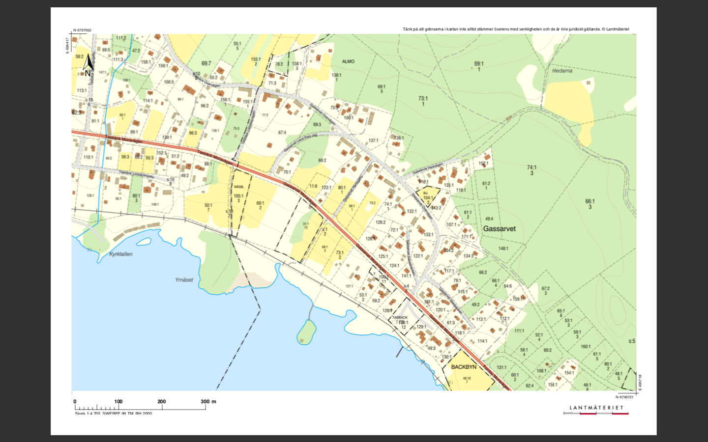
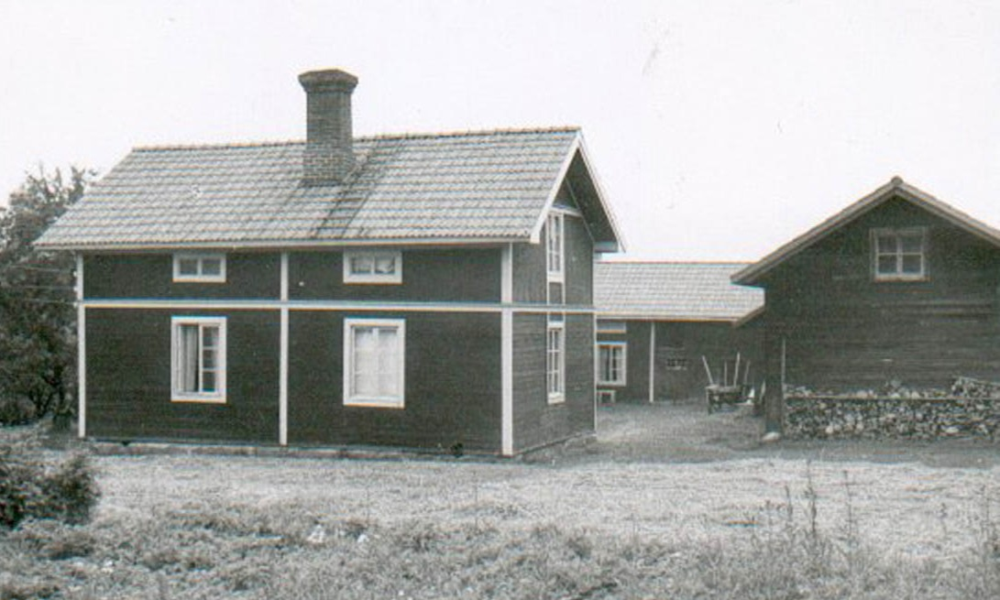

Gamla Gassarvsgårdar
nedtecknat av Lisbetes Roland Korsén (född Kors Roland Eriksson) 2020, reviderat 2021
De äldsta namngivna gårdsägarna är hämtade från en karta benämnd skiftesbodelning 1819-1823. Med hjälp av fastighetsbeteckningarna vid varje gårdsnamn kan du orientera dig på kartan nedan.

Görasgården F 132:1
Äldsta noteringen anger Göras Per Jakobsson (1820-talet). Kyrkvärden, soldaten (Göras) Anders Ersson Gothe, Backbyn f. 18/8 1820 gift 1844 med Göras Anna Persdotter f. 1821 och flyttade samma år till Gassarvet. (Sannolikt tog han vid flytten ”särknamnet” Göras vilket var vanligt.)
Barn: Gustav f. 1896, Anna, Karin, Maria f. 1901 som gifte sig med Pellas Per, Britta f. 1906, Signe f. 1910 samt Anders f. 1912.
Vid min barndom var lantbruket nedlagt och sonen Göras Anders som övertagit gården arbetade i Borlänge. Göras Anders sålde sedan gården till syster Karins dotter Margit i samband med att han köpte hus i Borlänge. Sedemera köpte Rejes hustru Lillemor Forsberg gården.
Anders son Bernt byggde senare ett hus vid Hedvägen ovanför gården och hans kusin Saras Göte övertog tomten bredvid.
Skalkomes F 74:1
Äldsta noteringen anger (Holjuvas Jonas Andersson). Erik Eriksson Skalk flyttade in från Stora Skedevi 1878. Gifte sig med Göras Anders Anderssons syster Anna Andersdotter f. 1846.
Barn: Göras Karolina Ersdotter f. 1888, Göras Selma Ersdotter f. 1891, Per-Erik, Anna.
Göras Karolina får barnet Anna Linnea f. 1908. Antecknar vid dopet barnet som sitt men 1913 ingav A Danielsson bevittnad skrivelse att han var far till barnet som får antecknas med namnet Danielsson och taga arv efter honom.
Göras Selma Ersdotter f. 1891 fick sönerna Lennart f. 1914 samt Göte f. 1916. Fadern svek Selma efter andra sonens födelse. Lennart gifte sig med Tägt Anna Eriksson från Björken och flyttade dit. Göte flyttade tidigt till Insjön.
Plars F 73:2
Sannolikt äldsta gården i Gassarvet. Äldsta noteringen anger Per Persson samt hustrun Kerstin Ersdotter. Söner Erik och Per. Dotter Anna. Bosatta i Gassarvet enligt husförhörsboken 1672-1689.
Gassnamnet förekommer för första gången 1708. Änkan Gass Brita Persdotter f. 1708. Sonen Gass Per Persson (döv) 1746-1817. Gift 1772 med Anna Persdotter 1743-1807. Sonen Gass Per Persson 1773-1830 gift 1798 med Margareta Persdotter 1779-1852 från Moen. Sonen Gass Per Persson f. 1807 gift 1836 med Carin Olsdotter f. 1815 från Åkerö. Dottern Karin Persdotter f. 1851 gift 1881 med Bortas Per Persson f. 1854 från Hjulbäck. Tog namnet Bergström år 1899.
Dottern Lovisa Bergström f. 1892 gifte sig 1914 med Plars Axel Persson f. 1891 från Björken. Axel lade efter en tid ner jordbruket och började arbeta som timmerman i Stockholm. Sonen Sven samt hustrun Karin bosatte sig senare på gården, som sedemera övergick till Svens son Jan. Jans syster övertog huset Sven byggde på i hagen ovanför byvägen.
LandJerkers F 68:1
Tidigt har en Hans Erik Olsson bott på gården. Därav kommer vägnamnet Hansgattu.
Land Carin Persdotter f 1864 gifte sig 1887 med Markus Erik Andersson f. 1862 från Tasbäck.
Dottern Land-Jerkers Anna f. 1891 övertog gården. Hennes man Högvalls Samuel arbetade som målare i Stockholm och Land Anna drev själv jordbruket vidare. Land Jerkers Anna (Lovisa) var en duktig dräktsömmerska som säkert sytt hundra dräkter, bland annat till Alice Babs. I boken "Dräktfolket" som Anja Notini skrev i samarbete med Grytnäs-Barbro finns en trevlig artikel med vackra bilder på Anna och dräktdetaljer.
Sonen Nils följde med sin far och arbetade som målare i Stockholm. Dottern Ingrid gifte sig med Esters Erik Leander från Grytnäs och bosatte sig på gården. Ingrids son Hasse och Maud äger nu gården.
Annas bror Land-Jerkers Anders f. 1888 flyttade till Stockholm och arbetade som murare. Han tog faderns gårdsnamn Markus och övertog sedan granngården som nu har namnet Marcus.
Marcus F 80:1
Enligt skiftesbodelningskartan 1819-1823 låg en gård med ägare Land Erik Persson mellan nuvarande gård och Land Pers. På nuvarande Marcusgård där övre stugan ligger är åker angiven. På en uppteckning Landpers Gösta (gjort på 1980-talet?) efter anvisning av Fart Anders ligger Landströmsgården där nuvarande gård ligger. Sannolikt är kartan rätt och den övre stugan har tillkommit på tidigare åkerlapp.
Land Erik Perssons f. 1782 gård betecknas Östra Landgården. Land Erik Perssons barnbarn Land Anders Persson f. 1855 bosätter sig på Östra Landgården och tar namnet Landström. Ett annat barnbarn Land Carin Persdotter f. 1864 gift med Markus Erik Andersson f. 1862 från Tasbäck bosätter sig på nuvarande Land Jerkers. Carins och Markus Eriks son Anders tar namnet Marcus efter fadern. Anders flyttade till Stockholm som murare men tar senare över gården som fritidsbostad.
Innan Anders Marcus övertog gården bodde en släkting som kallades ”Doven” på gården. Gården hörde nog ihop med LandJerkers innan Anders övertog den. Sannolikt hörde uthus och tidigare gammelstuga till Östra Landgården. Sönerna Arne och Rune flyttade sedan gammelstugan och Rune byggde upp den i nedre delen av gården. Arne disponerade den övre stugan. Sedemera övertogs gården av Runes son Peter och hans hustru Kicki.
Land Pers F 69:2
Land Anders Persson f. 1860 gift med Högvalls Carin Ersdotter f. 1859. De fick 8 barn varav 4 dog som barn.
Landpers Johan f. 1893 övertog gården. Johans första hustru Edit f. 1901var från Älvdalen men avled år 1923 när sonen Erik och dottern Märta var barn. Han gifte sig senare med Svens Anna Olsdotter, kallad Muris Anna, f. 1893 från Kråkbodarna och drev jordbruket vidare tillsammans med henne och deras son Olov f. 1930 Senare blev det Olle som drev jordbruket tillsammans med mor.
Systern Anna f. 1890 bodde kvar på gården och hjälpte till med jordbruket. Hon blev ”Gammelkölla”, som vi säger.
Dottern Märta växte upp hos moderns släkt i Älvdalen.
Erik utbildade sig till byggnadsingenjör och blev sen kalkylator på Svenska Industribyggen. Sedemera övertogs gården av Eriks son Conny och Susanne.

Land Pers ”gammelstuga”, i vilken i alla fall Land Per Persson f 1812 d 1867 och Land Per Persson f 1812 d 1887, synes ha bott. Stugan, som är av timmer, har på 1890-talet flyttats till numera Lisbetes gård och bland annat ha försetts med brädbeklädnad och tegeltak. Fotot från 1950-talet.Lassas F 67:4
Lassas Brita Persdotter f. 1847 gifte sig med Land Erik Persson f. 1846. De fick 8 barn varav 4 barn dog i tidig ålder (3 som spädbarn). Sonen Lassas Anders f. 1881 gifte sig med Nygårds Anna f. 1882 från Fornby. Döttrarna Carin f. 1878 samt Maria f. 1884 blev ”gammelköller” och bodde på gården hela livet. Yngsta sonen Lassas Johan f. 1888 övertog gården tillsammans med systrarna och drev jordbruket tillsammans med hustrun Lisbetes Anna f. 1892 från granngården. De bosatte sig i ”gammelstugan”. Systrarna Maria och Karin bodde kvar i ”nya” huset livet ut.
Johan och Anna fick sönerna Alfred f. 1914, Erik f. 1918, Gustav f. 1924 och Ingvar f. 1928.
Gustav byggde ett fritidshus ovanför Mullbacken. Alfred och Erik tog hand om gården efter att äldre generationen gått bort. Vid arvsskifte cirka 1980 såldes gård och skog var för sig. Lisbetes Roland köpte sen successivt tillbaka gård och hemskog. Sedemera vistades Rolands son Jerk på Lassasgården.
LassasAnders F 67:4 nedre delen (Fd 75:1 )
Lassas Johans bror Lassas Anders byggde sig en gård nedanför Lassas där han startade jordbruk med sin hustru Nygårds Anna från Fornby. Anders arbetade huvudsakligen som murare i Stockholm.
De fick sönerna Axel f. 1908, Oskar f. 1912 och Valfrid f. 1913, driftiga pojkar som tillsammans med andra i Gassarvet, Fornby och Tasbäck startade Byrvikens IK.
Lisbetes F 71:2
Lisbetes Olov f. 1864 från Mon-Tasbäck köpte gården från Backmans Lars år 1898 tillsammans med sin hustru Nybings Anna f. 1861 från Hjulbäck. De fick barnen Erik, Anna och Maria som alla föddes i Tasbäck. Hustrun dog år 1910 när barnen var unga.
Lisbetes Erik f. 1889 träffade sin hustru Back Karin f. 1898 från Gävunda när han var på timmerkörning i de trakterna. Lisbetes Erik övertog gården och drev jordbruket vidare till strax före sin död 1968. Lisbetes Erik och Karin fick döttrarna Ingeborg f. 1918, Sigrid f. 1921 och Margit f. 1926. Lisbetes Erik blev den siste jordbrukaren i byn. Ingeborg f. 1918 gift med Kors Oskar f 1913 från Backbyn övertog gården vid arvsskifte. Sedemera övertog sonen Roland och Kristina gården.
Skolan F 124:1
Tidigare fanns det skolor i de flesta byar och även i Gassarvet.
Jag tror skolan i Gassarvet användes för de yngre klasserna och barnen fick efter några skolår börja i Mons skola i Mobacken.
Det fanns en lärarbostad som en tid efter skolans nedläggning hyrdes ut. Bland annat minns jag att Jons Bertil och hans hustru Back Anna Lisa bodde där med sina tre döttrar.
En tid fanns det en handskfabrik i lokalerna. Det var en skinnföretagare från Malung som startade fabriken med ungdomar från Siljansnäs som anställda. Lisbetes Margit var ”föreståndare.” Två Tasbäckspojkar och resten flickor. Tasbäckspojkarna Båt Gunnar och Mattes Åke lever än och jag brukar prata med dem om handskfabriken ibland.
Senare såldes byggnaden och Stenborgs flyttade in.
Göras/Pellasgården F 72:1
Göras Maria gifte sig med Pellas Per från Björken och byggde huset. Vet ej vad Per hade för yrke men sannolikt murare. Pellas Per var byns frisör och jag fick följa med morfar dit när det var dags för oss båda. Frisörsaxen var nog lite skämd för rätt så ofta gjorde det ont.
Per och Maria fick barnen Folke och Signe. Folke byggde eget hus när han gifte sig med Berglunds Astrid från Fornby och Signe gifte sig med Folke Linden en son till mjölnaren i Altsarkvarn. På äldre dagar flyttade hon tillbaka till barndomshemmet.
PellasFolkes F 126:1
Pellas Folke byggde huset tillsammans med hustrun Berglunds Astrid från Fornby. Sedemera övertog sonen Pellas Anders sitt barndomshem.
Lindkvists F 70:1
Landpers Johans bror Land Per var timmerman i Stockholm och byggde huset sannolikt i början av första världskriget och flyttade hem med familjen. Två av barnen är födda i Siljansnäs – Ruth 1920 samt Signe 1923. Land Per flyttade sedan tillbaka till Stockholm och tomten med hus styckades av från stamfastigheten och såldes till Lindkvist Oskar från Mon.
Oskars första hustru avled och han gifte sig sedan med Prins Elsa från Tasbäck. Med första hustrun fick han dottern Anna. Han köpte en gård i Tasbäck (ovanför nuvarande båthusen) åt Anna när hon gifte sig. Med Prins Elsa fick han dottern Gunnel samt senare sonen Gösta.
Oskar var en driftig person som tidigare drivit affär i nuvarande bystugan på Mon. Nu startade han åkeri. Jag minns väl att när en ny lastbil var aktuell så fanns det ytterligare en ny i garaget en tid.
Han och fyra kompanjoner köpte Insjöns bryggeri som gjorde svagdricka. Oskar var försiktig och det sägs att när bryggeriet auktionerades ut så stannade han till och köpte detta på väg till Kvarnsveden med ett massavedslass på lastbilen. Senare köpte kompanjonerna en del av Kopparbergs bryggeri.
Alfens F 127:1
Huset byggdes av systern till Marcus Anders hustru Betty samt hennes man Alf Schwarts i början av 40-talet. Alf med hustru bodde i Bålsta utanför Stockholm.
Senare såldes huset till en de Geer som hyrde ut det till någon anställd, tror jag. På 50-talet köpte Stina och Kalle Sunesson huset. De byggde senare en gård med gamla hus på en avstyckad tomt och sålde huset. Sedemera köpte Sandströms huset.
Elof Schwarts hus F 114:1
Alfs broder Elof och hustrun Elna var ambulansförare respektive sjuksköterska på Epidemisjukhuset i Stockholm. De byggde huset i början av 50-talet och flyttade hit och bodde här livet ut.
Under den tiden hyrde en ättling från Fornby vid namn Gustav Sundin lillstugan på Lisbetesgården en del somrar. Jag tror han var lärare och ägnade tiden åt att forska i fornlämningar. Han upptäckte många fornminnen av olika slag framför allt i anslutning till Siljan och Byrviken. Gamla gravar från Asatiden på bl.a. Lissön och Vaverön talade han mycket om. Gustav Sundin eller dottern med måg köpte sedemera huset, som senare övertogs av Sundins dotterson.
Karis Pers F 128:1
Karis Per var född i Siljansnäs och byggde huset sannolikt på 40-talet. Karis Per var lärare i Bergslagen- Mälarregionen. Hans dotter Margareta övertog senare huset och bodde där till 2004, då Per och Britt Richloow övertog gården. Per härstammar ifrån Berglundsgården mitt emot Tasbäcks gamla byskola.
Präst-Martas F 120:1
Präst-Marta var dotter till kyrkoherden i Siljansnäs. Hon köpte en tomt och byggde ett hus i södra delen av byn. Huset övertogs av sonen Per-Olov och senare av Per-Olovs son Fredrik med hustrun Anneli.
Uppgifterna är hämtade från egna minnen samt tolkningar från Lampes Göstas (Gösta Land) släktnoteringar, kompletterade avseende Plars av Jan Plars, samt underlag Arne Land hjälpte Hasse Leander och mig att ta fram i samband med att vi gjorde en Gassarvutställning cirka år 2008-2009.